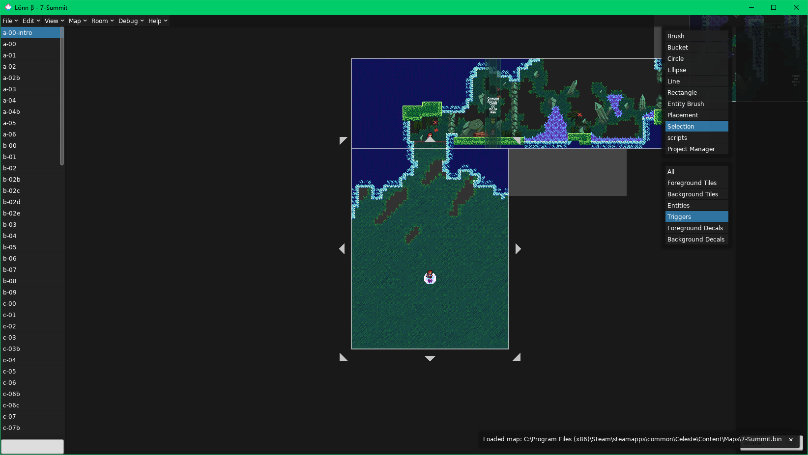
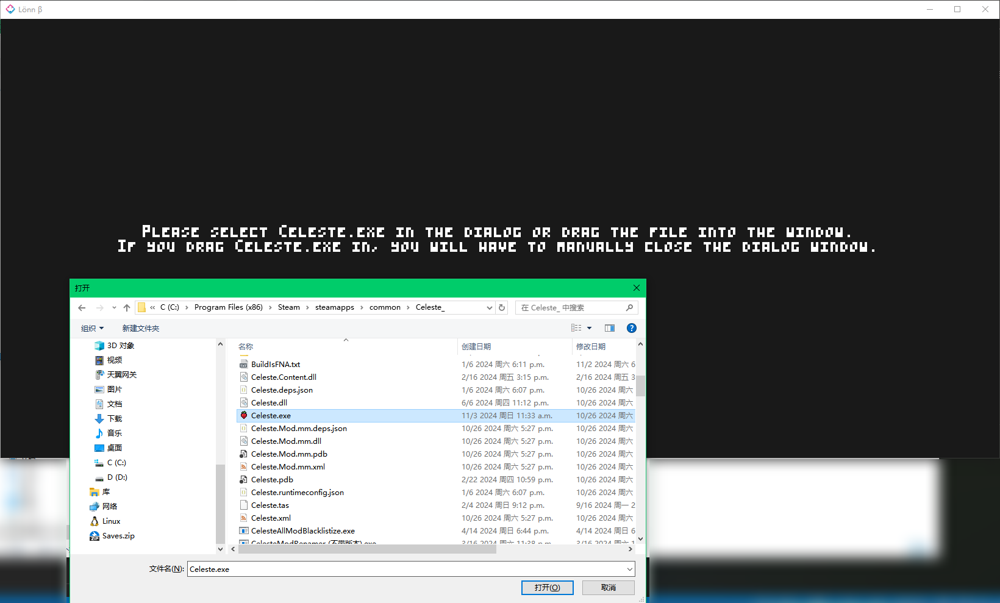
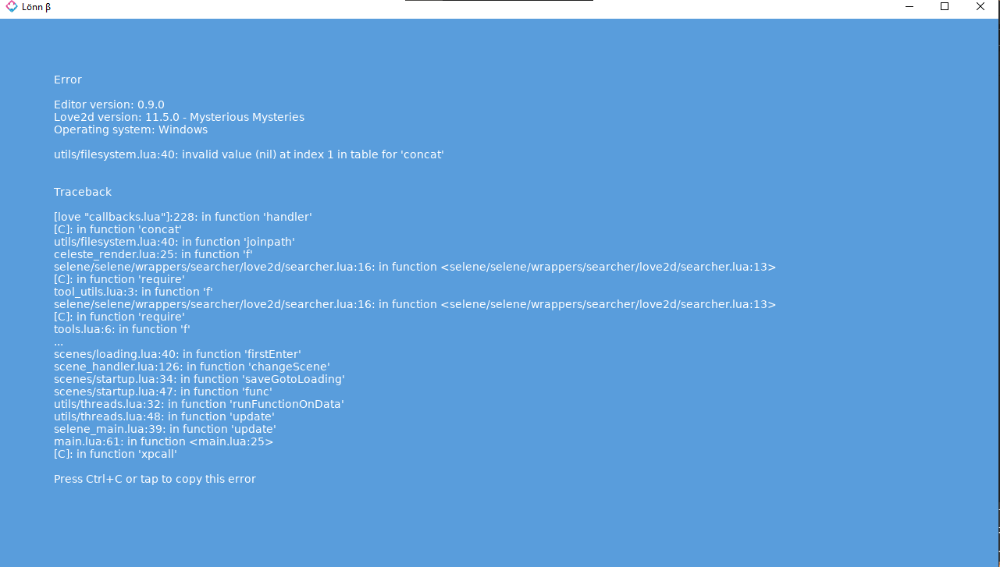
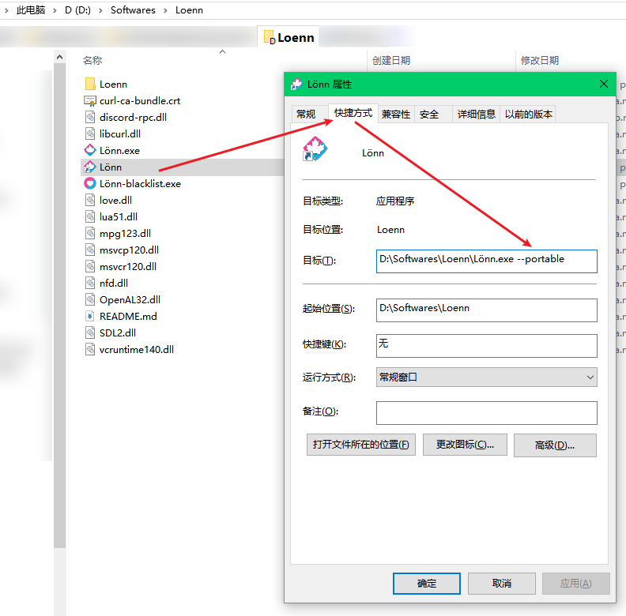
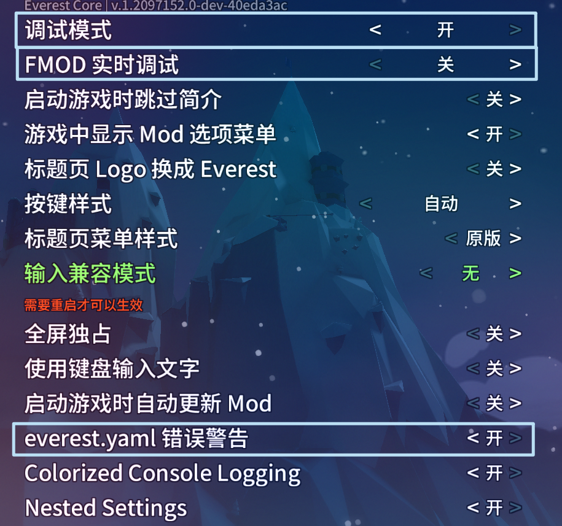

安装 Loenn
介绍
Lönn（或者写作 Loenn） 是目前主要的蔚蓝制图软件，它是一个几年前主要的制图软件 Ahorn 的替代，不过目前 Ahorn 已停止更新，所以我们只需要关注 Loenn。
Loenn 开源在 GitHub 上，所以你可以选择前往 GitHub Releases 忍受极慢的速度下载，或者，前往制图群的群文件中下载，它位于 “制图工具 本体(Loenn及Ahorn)” 文件夹中。
Loenn 支持三大桌面系统，所以一般你下载它时会遇到三种后缀的压缩包：
Loenn-v1.0.3-windows.zipLoenn-v1.0.3-macos.app.zipLoenn-v1.0.3-linux.zip
一般大概率你都在 Windows 平台上，此时你需要下载 windows 结尾的压缩包。
下载完毕后，解压压缩包，然后将整个文件夹放到一个你能找到的地方，然后双击 Lönn.exe 就能打开 Loenn 了。此时你应该能看到它默认打开了 7a：

可能遇到的问题
未找到蔚蓝

PLEASE SELECT CELESTE.EXE IN THE DIALOG OR DRAG THE FILE INTO THE WINDOW. IF YOU DRAG CELESTE.EXE IN, YOU WILL HAVE TO MANUALLY CLOSE THE DIALOG WINDOW.
该消息表示 Loenn 并没有在默认的一些位置（例如 Steam 游戏目录中）找到蔚蓝，此时你需要在弹出的对话框中选择蔚蓝的 Celeste.exe 文件，或者将该文件拖入窗口中(然后手动关掉对话框)。
路径包含中文字符

utils/filesystem.lua:40: Invalid value (nil) at index 1 in table for 'concat'
该消息表示很可能你的 Windows 用户文件夹名包含了中文，目前 Loenn 对中文路径会报错，但是更改 Windows 用户文件夹名风险很高，Loenn 提供了另外一种解决方法：
- 首先为你的
Lönn.exe新建一个快捷方式 - 右键快捷方式选择属性，然后在弹出的窗口中转到
快捷方式页面在目标的输入框后面加上--portable（注意最前面有空格并且有两个-符号）

此后你就可以用这个快捷方式正常启动 Loenn 了， 这会让 Loenn 的配置文件都放置在当前目录下而不会尝试放在用户文件夹下，避免了 Loenn 的报错。
游戏侧的配置
在安装好 Everest 后，你需要转到 Mod 选项 并打开如下几项设置：

- 调试模式：允许你按下
F6打开调试地图，并随意地传送到任何一个房间，还有很多其他的便于制作 Mod 的功能。 - FMOD 实时调试：允许你调试游戏内播放的音乐，这会在你为地图添加音乐时用到。
everest.yaml错误警告：让Everest在解析到有问题的everest.yaml时发出警告。
一切就绪后，开始新建你的第一个 Mod 的文件夹吧！（史诗级大作：新建文件夹）